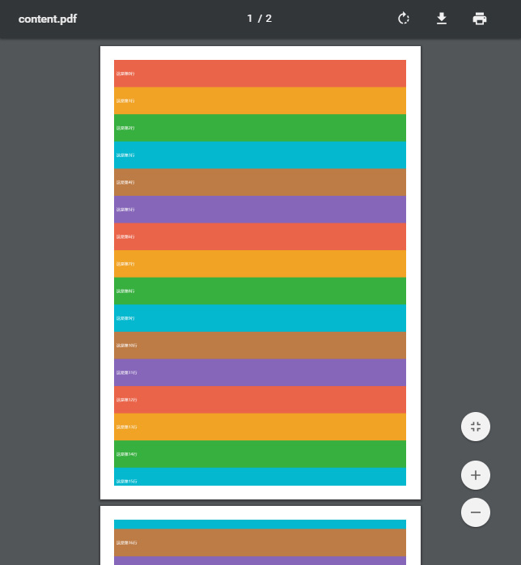

将WEB页面直接导出为pdf文件是经常会用到的一个功能，尤其是各种报表系统。总结了一下目前几种主流的做法：
在后端用代码生成pdf文件，比如iText一类；
在后端抓取页面并生成pdf文件，比如phantomjs一类；
在前端用js直接生成pdf文件；
方案3的优势在于前端直接生成，所见即所得。今天要探索的就是html2canvas和jspdf，前者用于将页面元素render生成canvas，后者用于将canvas生成pdf文档。需要注意的是，这种方法对IE系列支持不好。
html2canvas的主页：http://html2canvas.hertzen.com/
jspdf的主页：https://parall.ax/products/jspdf
两者的使用都比较简单，网上的文章很多，但是对于长网页导出，jspdf是不支持分页的，目前有一种做法是addImage时控制起始纵坐标为负值，然后超出页面底边的自动隐藏，就达到显示上的分页效果了，但这种方法无法给pdf页面留页边距，因此本文主要针对分页与页边距进行探索。
基本思路是对得到的canvas进行切割，按A4纸大小并留边距后的比例进行剪裁，切出一页一页的内容来，再分别加到pdf中。上个DEMO：
1 <!DOCTYPE html>
2 <html>
3 <head>
4 <meta charset="utf-8">
5 <title>测试PDF导出</title>
6 <meta http-equiv="X-UA-Compatible" content="IE=edge">
7 <meta name="viewport" content="width=device-width, initial-scale=1">
8 <script src="js/html2canvas.min.js"></script>
9 <script src="js/jspdf.min.js"></script>
10 <style>
11 html,body { margin:0; padding:0; }
12 #page ul { padding:0;list-style:none; }
13 #page li { line-height:110px;color:#fff;padding-left:10px; }
14 .c0 { background-color:#ea644a; }
15 .c1 { background-color:#f1a325; }
16 .c2 { background-color:#38b03f; }
17 .c3 { background-color:#03b8cf; }
18 .c4 { background-color:#bd7b46; }
19 .c5 { background-color:#8666b8; }
20 </style>
21 <script>
22 function exportPdf() {
23 var element = document.getElementById("page");
24 html2canvas(element, {
25 logging:false
26 }).then(function(canvas) {
27 var pdf = new jsPDF('p', 'mm', 'a4'); //A4纸，纵向
28 var ctx = canvas.getContext('2d'),
29 a4w = 190, a4h = 277, //A4大小，210mm x 297mm，四边各保留10mm的边距，显示区域190x277
30 imgHeight = Math.floor(a4h * canvas.width / a4w), //按A4显示比例换算一页图像的像素高度
31 renderedHeight = 0;
32
33 while(renderedHeight < canvas.height) {
34 var page = document.createElement("canvas");
35 page.width = canvas.width;
36 page.height = Math.min(imgHeight, canvas.height - renderedHeight);//可能内容不足一页
37
38 //用getImageData剪裁指定区域，并画到前面创建的canvas对象中
39 page.getContext('2d').putImageData(ctx.getImageData(0, renderedHeight, canvas.width, Math.min(imgHeight, canvas.height - renderedHeight)), 0, 0);
40 pdf.addImage(page.toDataURL('image/jpeg', 1.0), 'JPEG', 10, 10, a4w, Math.min(a4h, a4w * page.height / page.width)); //添加图像到页面，保留10mm边距
41
42 renderedHeight += imgHeight;
43 if(renderedHeight < canvas.height)
44 pdf.addPage();//如果后面还有内容，添加一个空页
45 delete page;
46 }
47 pdf.save('content.pdf');
48 });
49 }
50
51 function generateData() {
52 var html = [];
53 html[html.length] = '<ul>';
54 for(var i = 0;i < 20;++i) {
55 html[html.length] = '<li class="c';
56 html[html.length] = i % 6;
57 html[html.length] = '">这是第';
58 html[html.length] = i;
59 html[html.length] = '行</li>';
60 }
61 html[html.length] = '</ul>';
62 document.getElementById('page').innerHTML = html.join('');
63 }
64 </script>
65 </head>
66 <body onload="generateData()">
67 <button onclick="exportPdf()">导出pdf</button>
68 <div id="page"></div>
69 </body>
70 </html>
核心的是exportPdf这个方法 ，感兴趣的同学可以参考。生成的pdf效果如图，可以看到分页和页边距效果：
